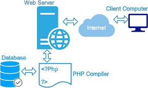

A web application is a software application that runs on a web server, unlike computer-based software programs that run locally on the operating system of the device. Web applications are accessed by the user through a web browser with an active network connection.
The client-side refers to everything in a web application that happens on the browser, such as user interface and interactions. The server-side, on the other hand, refers to the backend, where the server processes user requests, interacts with databases, and sends responses back to the client.
| Client-Side | Server-Side |
|---|---|
| 1.Executed on the user's browser (frontend). | 1.Executed on the server (backend). |
| 2.Used for creating interactive and dynamic elements on the webpage. | 2.Used for processing data, interacting with databases, and controlling the application’s business logic. |
| 3.Languages include HTML, CSS, JavaScript, etc. | 3.Languages include PHP, Node.js, Python, Ruby, etc. |
| 4.Examples: Form validation, animations, user interactions. | 4.Examples: User authentication, database operations, API interactions. |
| 5.More accessible and faster since it doesn’t require server processing. | 5.Handles complex logic and operations securely on the server-side. |
Web servers are software or hardware that store and manage websites, delivering web pages and other web-based content to end-users. Popular web servers include Apache, Nginx, Microsoft IIS, and LiteSpeed.
WAMP stands for Windows, Apache, MySQL, and PHP. It is a stack of software commonly used in web development, enabling a local development environment to test websites or web applications before making them live.
Static websites consist of web pages with fixed content, created with HTML and CSS, and show the same information to every visitor. Dynamic websites, on the other hand, interact with users and display different content based on user interaction or data fetched from a database.